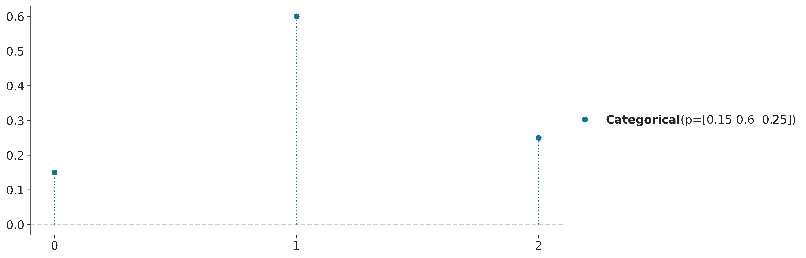
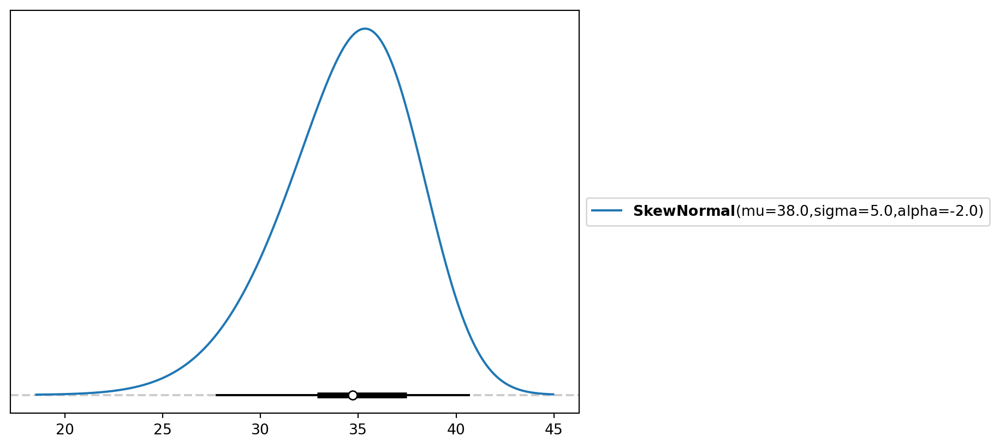
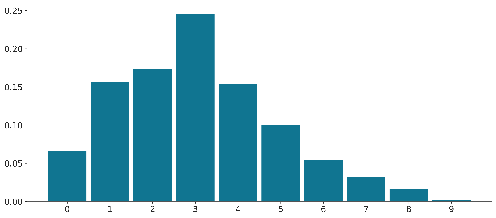
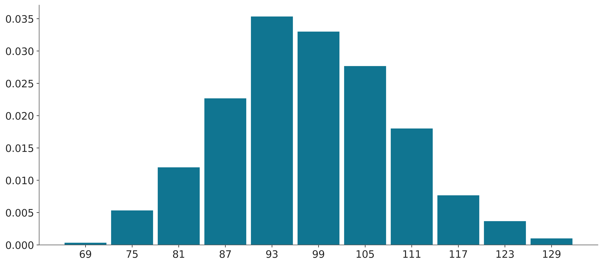
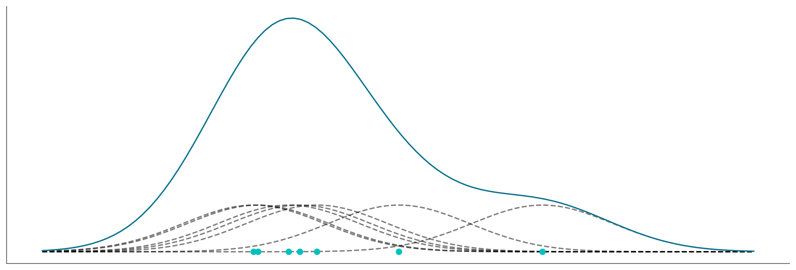
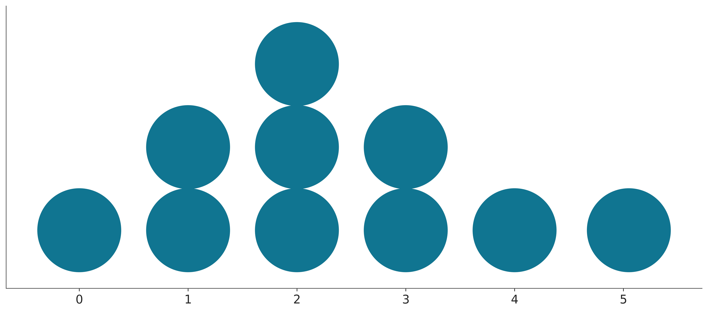

2 Random variables, distributions, and uncertainty
2.1 Random variables
From a Bayesian perspective probabilities represent a degree of (un)certainty about the occurrence of an event. It is a measure of the likelihood that a particular hypothesis or event is true, given the available data and prior knowledge. We assign the value 0 to something impossible and 1 to something certain. When we are unsure we assign a value in between. For example, we could say that the probability of rain tomorrow is 0.32. This means that we are 32% certain that it will rain tomorrow.
In practice we usually do not care about individual probabilities, instead we work with probability distributions. A probability distribution describes the probabilities associated with each possible outcome of an experiment. In statistics, the term “experiment” is used in a very wide sense. It could mean a well-planned experiment in a laboratory, but it could also mean the result of a poll, the observation of the weather tomorrow, or the number of people that will visit a website next week.
Let’s consider the experiment of observing the weather tomorrow. The possible outcomes of this experiment include the following outcomes:
RainySunnyCloudy
Notice that we are omitting the possibility of snow, or hail. In other words, we are assigning 0 probability to those outcomes. It is usually the case that we do not ponder all the possible outcomes of an experiment, either because we deliberately assume them to be irrelevant, because we don’t know about them, or because is too complex/expensive/time-consuming/etc to take them all into account.
Another important thing to notice, from this example, is that these outcomes are words (or strings if you want). To work with them we need to assign a number to each outcome. For example, we could assign the numbers 0 to Rainy, 1 to Sunny, and 2 to Cloudy. This mapping from the outcomes to the numbers is called a random variable. This is a funny and potentially misleading name as its mathematical definition is not random (the mapping is deterministic) nor a variable (it is a function). The mapping is arbitrary, -1 to Rainy, 0 to Sunny, and 4 to Cloudy is also valid. But once we pick one mapping, we keep using it for the rest of the experiment or analysis. One common source of confusion is understanding where the randomness comes from if the mapping is deterministic. The randomness comes from the uncertainty about the outcome of the experiment, i.e. the weather tomorrow. We are not sure if it will be rainy tomorrow until tomorrow comes.
Random variables can be classified into two main types: discrete and continuous.
Discrete Random Variables: They can take on a countable number of distinct values. We already saw an example of a discrete random variable, the
weather tomorrow. It can take on three values:Rainy,Sunny, andCloudy. No intermediate values are allowed in our experiment, even when it is true that it can be partially sunny and still rain. And it has to be at least partially cloudy to rain. But we are not considering those possibilities.Continuous Random Variables: They can take on any value within a certain range. For example, the temperature tomorrow is a continuous random variable. If we use a Celcius scale, then it can take on any value between -273.15 Celsius to \(+ \infty\). Of course, in practice, the expected temperature is restricted to a much narrower range. The lowest recorded temperature on Earth is −89.2 °C and the highest is 56.7 °C, and that range will be even narrower if we consider a particular region of our planet.
2.2 Probability mass and density functions
The probability distribution of a discrete random variable is often described using a probability mass function (PMF), which gives the probability of each possible outcome. For instance, the following plot shows the probability mass function of a categorical distribution with three possible outcomes, like Rainy, Sunny, and Cloudy.
Usually, there is more than one probability distribution that we can use to represent the same set of probabilities, for instance, we could use a binomial distribution.
The probability distribution of a continuous random variable is described using a probability density function (PDF), which specifies the likelihood of the random variable falling within a particular interval. For instance, we could use a normal distribution to describe the temperature tomorrow.
or maybe a skew normal like this if we expect higher temperatures like during summer.
Note
Notice that we use plot_pdf() instead of plot_pmf(), this is because PreliZ uses the same method to plot both discrete and continuous distributions. In the case of discrete distributions, it will plot the probability mass function (PMF), and in the case of continuous distributions, it will plot the probability density function (PDF).
One issue when interpreting a PDF is that the y-axis is a density, not a probability. To get probability from a PDF we need to integrate the density over a given interval. This is something straightforward to do with a computer. But not that easy to do “visually”, human eyes/brains are not very good at that task. One way to alleviate this issue is to accompany a PDF with a point interval, like in the following plot.

The point interval shows the quantiles of the distribution. Quantiles divide a dataset into equal probability intervals. For example, deciles divide a dataset into 10 equal-probability intervals, and quartiles divide a dataset into 4 equal-probability intervals. The most common quantile is the median (or 50th percentile), which divides a dataset into two equal-probability intervals where half of the data falls below the median and half of the data falls above the median.
The point interval in Figure 2.5 shows the 5th, 25th, 50th, 75th, and 95th percentiles. The point is the median. The tick line is the interquartile range (the central 50% of the distribution) and the thin line is the central 90% of the distribution.
2.3 Cumulative distribution functions
In the previous section, we saw that we can use PMFs and PDFs to represent the probability distribution of a random variable. But there are other ways to represent a distribution. For example, we could use the cumulative distribution function (CDF).
The CDF is defined as the probability that the random variable takes a value less than or equal to \(x\). The CDF is defined for both discrete and continuous random variables. Figure 2.6 shows the CDF of a categorical distribution with three possible outcomes. Compare it with Figure 2.1
Figure 2.7 shows the CDF of a normal distribution (compare it with Figure 2.3).
The CDF is usually easier to read than the PDF, as we already saw y-axis for a PDF is a density that has no intrinsic meaning, and to get probability from a PDF we need to evaluate areas. Instead for a CDF the y-axis is a probability. For the PMF/PDF it is easier to get the mode (the highest value for the point/curve), and for the CDF it is easier to get the median (the value of \(x\) for which \(y=0.5\)), or other quantiles. From the CDF it is also easier to quickly get quantities like the probability of getting a temperature equal or lower than 35 degrees. It is the value of the CDF at 35. From Figure 2.7 we can see that it is roughly 0.9 or 90%, if you want more accuracy you could use a matplotlib/ArviZ style with a grid (like arviz-darkgrid) or use the cdf() function.
From the CDF we can also easily get the probability of a range of values. For example, the probability of the temperature being between 25 and 35 degrees is the difference between the CDF at 35 and the CDF at 25. From Figure 2.7 we can get that it is roughly 0.9 or 90%. Again even when you can get a good estimate just by looking at the graph you can use the cdf() function to get a more accurate estimate. But the fact that you can get a good estimate by looking at the graph is a good feature.
2.4 Inverse cumulative distribution functions
Sometimes we may want to use the inverse of the CDF. This is known as the quantile function or the percent point function (PPF). The PPF is also defined for both discrete and continuous random variables. For example, Figure 2.8 shows the PPF of a categorical distribution with three possible outcomes and Figure 2.9 shows the PPF of a normal distribution.
2.5 Distributions in ArviZ
The PMF/PDF, CDF, and PPF are convenient ways to represent distributions for which we know the analytical form. But in practice, we often work with distributions that we don’t know their analytical form. Instead, we have a set of samples from the distribution. A clear example is a posterior distribution, computed using an MCMC method. For those cases, we still want useful visualization that we can use for ourselves or to show others. Some common methods are:
- Histograms
- Kernel density estimation (KDE)
- Empirical cumulative distribution function (ECDF)
- Quantile dot plots
We will discuss these methods in the next subsections with special emphasis on how they are implemented in ArviZ.
2.5.1 Histograms
Histograms are a very simple and effective way to represent a distribution. The basic idea is to divide the range of the data into a set of bins and count how many data points fall into each bin. Then we use as many bars as bins, with the height of the bars being proportional to the counts. The following video shows a step-by-step animation of a histogram being built.
Histograms can be used to represent both discrete and continuous random variables. Discrete variables are usually represented using integers. When ArviZ is asked to plot integer data it will use histograms as the default method. Arguably the most important parameter of a histogram is the number of bins. Too few bins and we will miss details, too many and we will plot noise. You can pick the number of bins with a bit of trial and error, especially when you are sure of what you want to show. However, there are many methods to compute the number of bins automatically from the data, like the Freedman–Diaconis rule or the Sturges’ rule. By default, ArviZ computes the number of bins using both rules and then picks the one that gives the largest number of bins. This is the same approach used by np.histogram(., bins="auto) and plt.hist(., bins="auto). Additionally, when the data is of type integers, ArviZ will preserve that structure and will associate bins to integers, instead of floats. If the number of unique integers is relatively small then, it will associate one bin to each integer. For example, in the following plot each bar is associated with an integer in the interval [0, 9].

When the discrete values take higher values, like in Figure 2.11, bins are still associated with integers but many integers are binned together.

If you don’t like the default binning criteria of ArviZ, you can change it by passing the bins argument using the hist_kwargs.
2.5.2 KDE
Kernel density estimation (KDE) is a non-parametric way to estimate the probability density function from a sample. Intuitivelly you can think of it as the smooth version of a histogram. Conceptually you place a kernel function like a Gaussian on top of a data point, then you sum all the Gaussians, generally evaluated over a grid and not over the data points. Results are normalized so the total area under the curve is one. The following video shows a step-by-step animation of a KDE being built. You can see a version with border corrections and without them. Border corrections avoid adding a positive density outside the range of the data.
The following block of code shows a very simple example of a KDE.
_, ax = plt.subplots(figsize=(12, 4))
bandwidth = 0.4
np.random.seed(19)
datapoints = 7
y = np.random.normal(7, size=datapoints)
x = np.linspace(y.min() - bandwidth * 3, y.max() + bandwidth * 3, 100)
kernels = np.transpose([pz.Normal(i, bandwidth).pdf(x) for i in y])
kernels *= 1/datapoints # normalize the results
ax.plot(x, kernels, 'k--', alpha=0.5)
ax.plot(y, np.zeros(len(y)), 'C1o')
ax.plot(x, kernels.sum(1))
ax.set_xticks([])
ax.set_yticks([]);
The most important parameter of a KDE is the bandwidth which controls the degree of smoothness of the resulting curve. It is analogous to the number of bins for the histograms. ArviZ’s default method to compute the bandwidth works well for a wide range of distributions including multimodal ones. Compared to other KDEs in the Python ecosystem, the KDE implemented in ArviZ automatically handles the boundaries of a distribution. ArviZ will assign a density of zero to any point outside the range of the data.
The following example shows a KDE computed from a sample from a Gamma distribution. Notice that ArviZ computes a KDE instead of a histogram, and notice that there is no density for negative values.
2.5.3 ECDF
Both histograms and KDEs are ways to approximate the PMF/PDF of a distribution from a sample. But sometimes we may want to approximate the CDF instead. The empirical cumulative distribution function (ECDF) is a non-parametric way to estimate the CDF. It is a step function that jumps up by 1/N at each observed data point, where N is the total number of data points. The following video shows a step-by-step animation of an ECDF being built.
The following block of code shows a very simple example of an ECDF.
2.5.4 Quantile dot plots
A quantile dot plot displays the distribution of a sample in terms of its quantiles. Reading the median or other quantiles from quantile dot plots is generally easy, we just need to count the number of dots.
The folowing video shows a step-by-step animation of a quantile dot plot being built.
From Figure 2.15 we can easily see that 30% of the data is below 2. We do this by noticing that we have a total of 10 dots and 3 of them are below 2.

The number of quantiles (nquantiles) is something you will need to choose by yourself, usually, it is a good idea to keep this number relatively small and “round”, as the main feature of a quantile dot plot is that finding probability intervals reduces to counting dots. It is easier to count and compute proportion if you have 10, or 20 dots than if you have 11 or 57. But sometimes a larger number could be a good idea too, for instance, if you or your audience wants to focus on the tails of the distribution a larger number of dots will give you more resolution and you still will be counting only a rather small number dots so it will be easy to compute proportions.